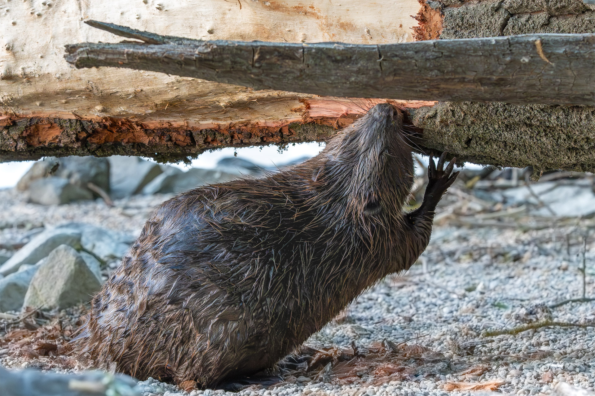

A hódok (Castor) a rágcsálók rendjébe és a hódfélék családjába tartozó nem. Különleges képességük, hogy saját maguk építik ki az élőhelyüket jelentő gátakat és hódvárakat. Ezzel kulcsfontosságú szerepet töltenek be az ökoszisztémában, mivel új vizes élőhelyeket hoznak létre.
